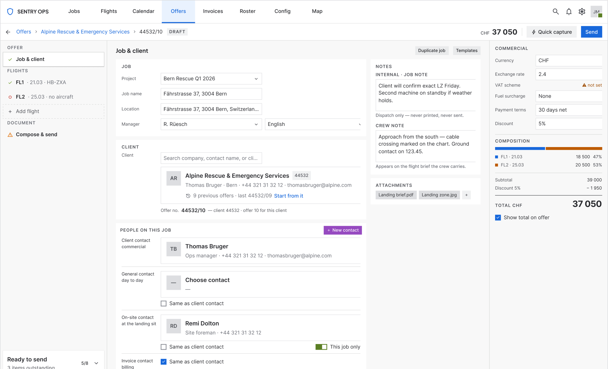
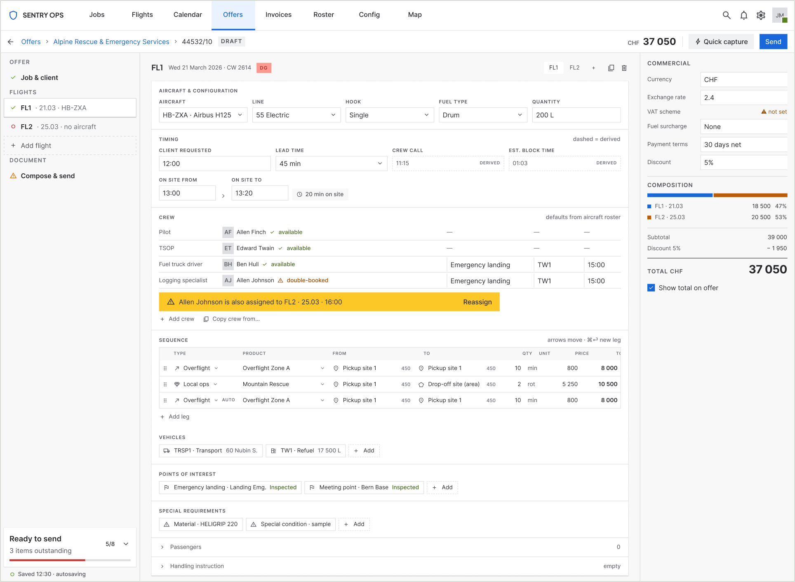
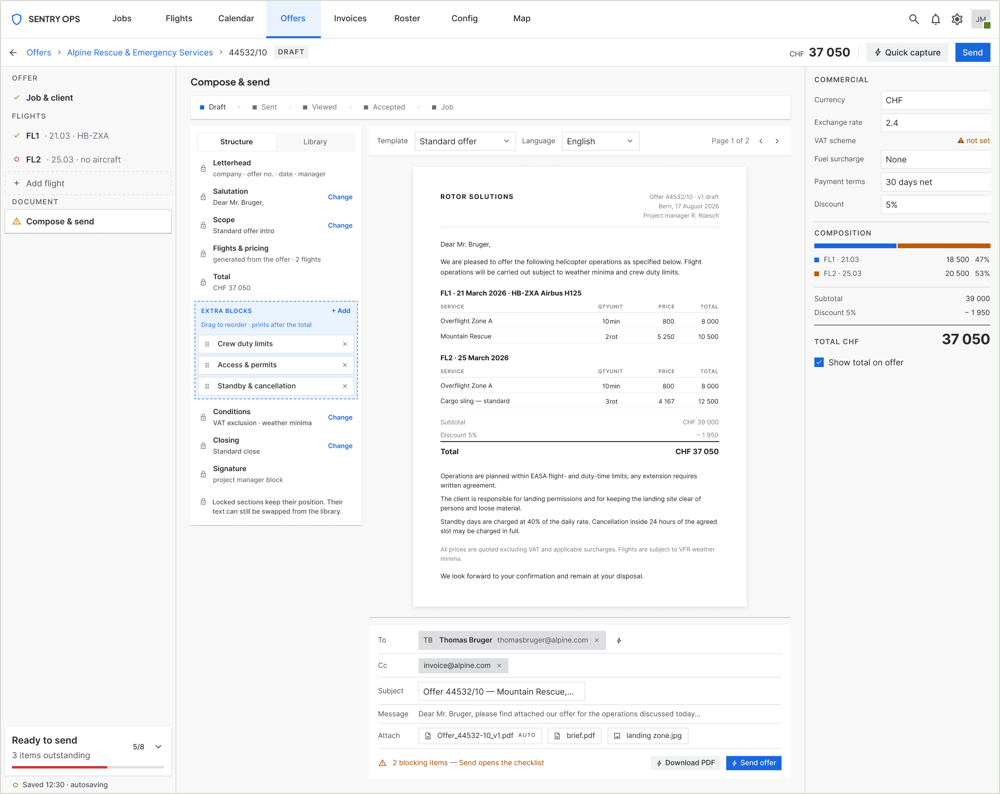
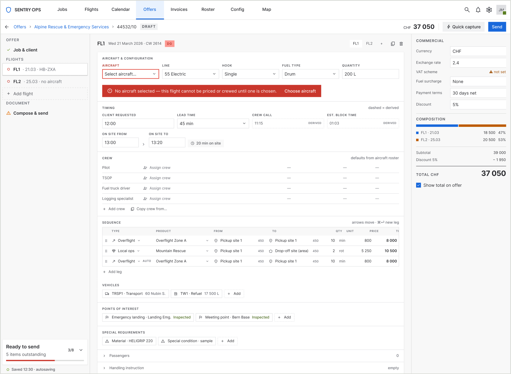
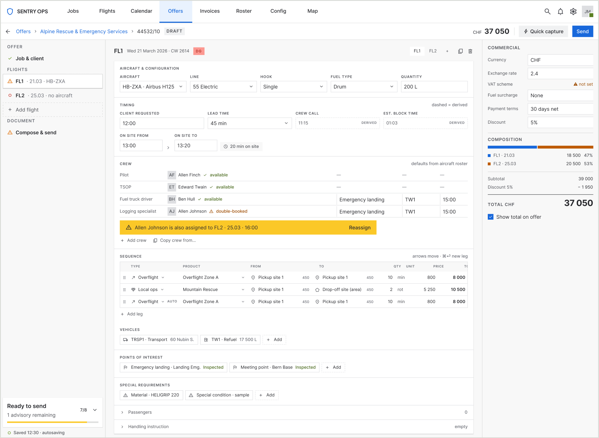
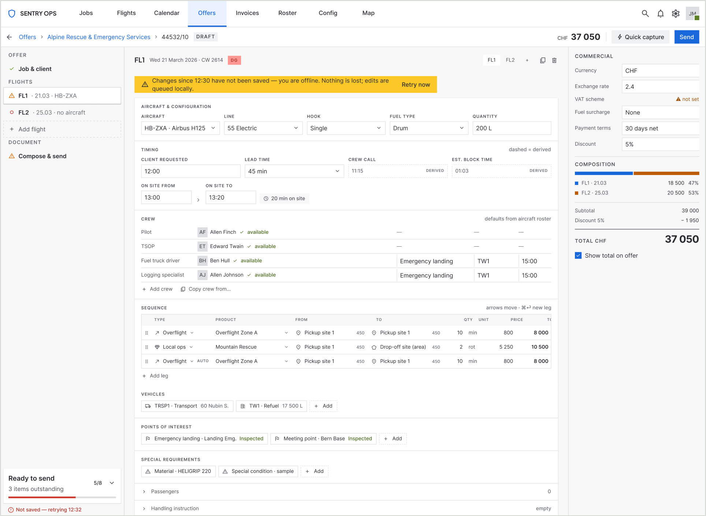
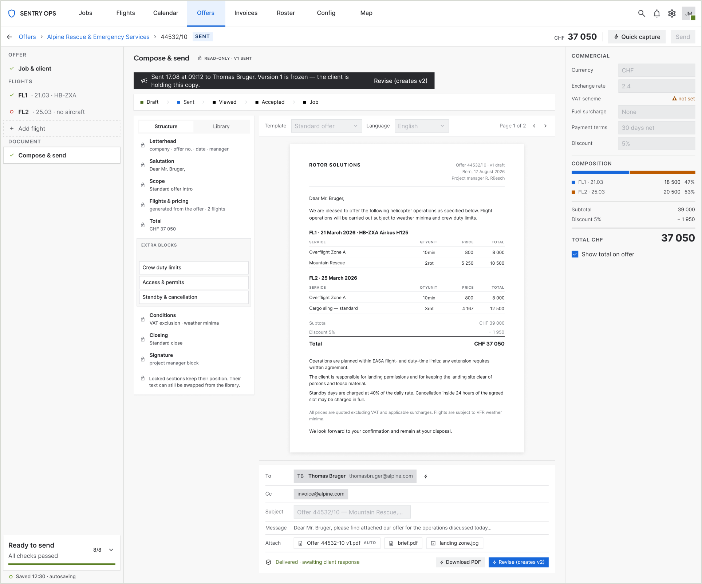

Case study · Product design
A dispatch platform used by helicopter operators across Europe. The offer page is where a dispatcher turns a phone call into a priced, sendable quote — and the screen they were avoiding, in favour of a notepad.

The redesigned offer page — Job & client context. Left rail carries structure and readiness; centre canvas shows one context at a time; right ledger holds the commercials.
By the numbers
8
operator companies
50–60
dispatchers on the platform
10–20
calls per dispatcher per day
60+
fields, across 12 parallel tables
4 → 1
lifecycle stages the page serves
2 → 1
entry passes per offer
16
states designed, with recovery routes
~50%
less time from call to sent offer
Offers passing through this one screen: roughly 500–1,200 a day across the platform (arithmetic from the two figures above).
01The problem
Three complaints that turned out to be one complaint
The redesign was triggered by customers, not by a roadmap. The operators who use this screen every day told us it was the problem, and they said three things.
It's error-prone
Mistakes were being made on a screen where mistakes are expensive.
It's too hard to train on
A new dispatcher could not simply be handed this page.
Too much is updated by hand
State the system already knew was being maintained manually. “A lot of work,” as they put it.
A screen that shows four lifecycle stages at once is necessarily a screen where a dispatcher hand-maintains fields belonging to stages they aren't in — which is both the manual-work burden and the error surface, and why the page can't be taught in a sitting: you can't explain it without explaining the whole job lifecycle.
Two moves answered all three: separate the offer stage from the execution stages, and derive everything the system already knew.
Fixed before I started
Legacy data model stays
No schema changes.
Backend stays
No new services, no re-architecture.
Ships inside the existing app
Same chrome, same navigation, same browser.
These are why the redesign is a restructuring rather than a rebuild — and the reason most of the value was still available without a single backend change.
02The research
They were not using the software during the call
Five dispatchers, each interviewed on a separate call rather than together — so nobody was agreeing with the loudest voice in a group session. All five described the same workaround.
“When I'm taking the call I need to know where to put the information. The way it works now, I write it on paper and fill in the details afterwards. It would be much better if I could write straight into the system. And when I do enter it, I have to find things — everything is on one page and it's tiny.”
What the paper step explains
The errors
Every offer was entered twice — once by hand, once into the system. Double entry is a transcription-error machine, and validation on the second pass cannot catch a number copied correctly from a notepad that was written down wrong.
The manual work
The first transcription was itself manual work: an entire duplicate pass the software had made necessary by being unusable at the one moment it was most needed.
The training difficulty
You cannot learn a screen you don't use live. Dispatchers learned the page in a slow, after-the-fact mode, then were expected to perform on it under pressure.
The software was competent at the phase where the dispatcher had time, and useless at the phase where they had none.
A dense 2,000px form is survivable when you're transcribing from notes at your own pace. It is unusable while a client is talking, because the cost isn't typing — it's searching. “I have to find things” is the whole problem in four words. I had gone into those calls expecting a density problem I could solve by reorganising the page; what I got was a page that wasn't being used at the moment it existed for.
03The diagnosis
The brief was “everything is on one page.” That's the symptom.
I found five causes and ranked them by what each one cost the dispatcher. The first is the one that removed a third of the interface.
| Column group | Meaning | When it's filled | By whom |
|---|---|---|---|
| OFFER | What we quote | Now | Dispatcher |
| PLANNED | Estimated flight / extra time | Later | Ops |
| WORK | Billing units | After the job | Billing |
| FLOWN | Recorded actuals | After the flight | Pilot / ops |
Three of the four column groups — three quarters of the widest, most cognitively expensive table on the page — were irrelevant to the person writing an offer, and sat there full of 00000 placeholders. Removing them deleted roughly a third of the interface before a pixel was redesigned.
-
01
The page served three lifecycle stages at once
An offer is a commercial proposal; a job is an operational record. They share a data spine but are edited by different people, at different times, with different failure modes.
-
02
The hierarchy was flattened into parallel tables
Crew Assignment sat at the bottom as a flat table with no flight column at all. The dispatcher held parent-child relationships in working memory, on a 2,000px page, while someone talked in their ear.
-
03
Nothing had primacy
Every region carried identical weight. The total — the number the client asks about — was a small cell mid-table, below the fold. Three near-identical contact columns took ~30% of the first screen.
-
04
Colour was overloaded
Six-plus hues carrying at least four kinds of meaning, with no legend. When red means both “this field is invalid” and “this location is an area”, red stops meaning anything.
-
05
The spatial task was trapped behind a button
The map was a modal. Every location entry was: click icon → modal → find → confirm → close → context lost → repeat. Twelve times per job.
The evidence behind this is behavioural and reported, not instrumented: three standing complaints and five independent accounts of the same workaround. A user who invents a paper process to avoid your software has already told you it failed — more reliably than any satisfaction score would.
04Reframing
One form, four tasks — and the users had already separated them
The old page was built for one phase — Shape — and made the other three fit around it. Capture, the phase with zero friction tolerance, was the one it served worst. That is exactly why it got replaced by paper.
Capture
30–90 s
On the call
Friction tolerance
Zero. Any friction loses information.
Shape
3–10 min
On or after the call
Friction tolerance
Low — this is the craft work
Resource
2–5 min
Later, possibly someone else
Friction tolerance
Medium — depends on the roster
Compose & send
1–3 min
Once, at the end
Friction tolerance
Low, but must feel safe — it's client-facing
The decision this forced: not a wizard
A wizard is the obvious answer to “too much on one page”, and it's wrong here. Wizards enforce an order the phone call doesn't have — clients volunteer the return date before the aircraft type, the passenger count halfway through describing the site — and they punish the most common real case: cloning last month's job for a repeat client and changing the date. A wizard turns a 40-second edit into a nine-screen walk.
But a flat 2,000px form was equally wrong. What people want from a wizard is rarely enforced order; it's knowing what's left and not facing everything at once. Those are separable from sequencing — a navigable structure with a completeness ledger delivers both without the cost.
05The design
One rail, one canvas, one ledger
Left rail
Structure and validation state in one column. Every node carries a completeness marker, and a live “Ready to send: N items left” expands into a click-through list. This answers “what's missing?” — a question the old page could not answer at all.
Centre canvas
One context at a time: Job & client, a Flight, or the Document. Not a wizard — you can jump anywhere, in any order, at any level of completeness.
Right ledger
Currency, VAT, discount, terms, a per-flight breakdown and the running total. Cause sits directly above effect.
Capture gets its own front door
Because the diagnosis was that the page failed during the call, the design starts there: a quick-capture path that takes client, date, route and passenger count in one pass, and opens the full structure behind it. The test I held it to was the notepad — can a dispatcher type into this as fast as they'd scribble? Anything that failed that test moved to Shape.

Derive everything the system already knows
| Field | Was | Became |
|---|---|---|
| Offer number | Typed by hand | Derived: client number + sequence (44532/10) |
| Overflight legs | Hand-entered | Generated from the legs either side, marked AUTO |
| Unit and price | Retyped each time | Filled from the product, contract rate where one exists |
| Crew | Re-selected per flight | Defaulted from the aircraft's roster, with availability |
| Crew call time | Worked out mentally | Derived: requested time − lead time |
The offer number is my favourite finding: the old form already showed 44532 beside the contact columns and 44532/10 in the header. It was client number + sequence all along — the form just never said so, and presented the result as a field you could type into. Every row here is also a row removed from the notepad.
One location field, three kinds
The old form made the dispatcher choose a type — saved site, coordinates, or area — before entering anything. The new field auto-detects: type a name → saved site; paste 46.94, 7.44 → coordinates; draw → area. The glyph reports what it resolved to rather than asking.
~12 type-decisions and ~12 modal round-trips removed per job.
A locked skeleton with one free zone
Dispatchers need to vary wording job to job, but a freely rearrangeable document stops being an offer — a client who reads twenty of these a year should find the price in the same place every time. So: a fixed skeleton with exactly one arrangeable zone.
Locked means unmovable, not uneditable. Only the extra blocks carry drag handles, so the affordance teaches the rule and no error message is needed.

06Failure states
Sixteen states, each with a route out
Most of the design work was not the happy path: empty, healthy, no aircraft, aircraft unavailable, crew double-booked, dangerous goods with an uncertified pilot, leg missing product, leg missing price, unresolved location, autosave failed, edited by someone else, send blocked, block untranslated, send failed, sent, accepted. Specifying failure at design time — when the answer is still a design decision — is most of what separates a screen that survives real use from one that demos well.



A missing price shows —, never 0
A zero is a number; it sums silently into the offer as free work. A dash reads as unanswered. The cheapest error-prevention decision in the design, and it cost one character.
Send is never a dead button
Pressing it with problems outstanding names the count and expands the checklist, each row jumping to the offending field. A disabled Send with no explanation withholds both the reason and the route.
07System work
Extending a system without fragmenting it
The design system already existed. My job was not to build one — it was to add what this screen genuinely needed and nothing else, which is the harder discipline of the two.
| Component | Why it had to exist |
|---|---|
| Field cell | Dense grid input at a row height the existing text field couldn't reach |
| Location cell | The three-kinds-of-location behaviour |
| Sequence leg row | The offer-stage leg: type, product, price, derived state |
| Crew row | Crew under a flight, with availability and certification |
| Result row | Search results for client, product and contact pickers |
A border-subtlest token
Existing borders were too heavy at this density — fine on a form with twelve fields, oppressive on a grid with sixty. Rather than override strokes locally I added the token the system was missing, bound it in both themes, and repointed the components. The local override would have been faster and would have started the fragmentation this system had so far avoided.
Squaring every corner
Auditing components for this screen, I found the system was square-cornered by convention — buttons, fields, selects, tags, menus, modals — but a handful had drifted to pills and circles. I did a full pass to bring them back, including rebuilding the readiness rings as linear meters. The value wasn't the corners; it was that the convention became enforced rather than merely prevalent.
Validation
Before
Five interviews, which produced the finding the whole design rests on — and killed my density-reorganisation instinct before it cost anything to build.
During
A full interactive prototype in light and dark, pressure-tested against real job shapes rather than a happy path: multi-flight jobs, overflight legs, area locations, repeat clients.
After
Shipped, and in daily use across the eight operators.
What the project traded away: with three months and one designer, I chose breadth of specification — every state, every scenario, every component — over a formal moderated testing round between prototype and build. Given that the interviews had already produced an unambiguous finding I'd make the same call again, but it is the first thing I'd add with more time. “The users told us what was wrong” and “we watched them succeed at the new thing” are not the same evidence.
08Outcomes
The notepad step stops being necessary
~50%
Dispatchers report the time from call to sent offer roughly halved.
That figure is worth interrogating, because a 50% claim usually means an interface got incrementally faster and someone rounded generously. Here it has a mechanical explanation: every offer used to be entered twice — once onto paper during the call, once into the system afterwards — and the redesign removes one of those two passes outright. A halving is not the optimistic reading of that change; it is the arithmetic of it, and any interface speed-up sits on top.
The same applies to errors: removing a transcription pass doesn't lower the transcription error rate, it takes that error population to zero.
| The complaint | What changed | Result |
|---|---|---|
| Error-prone | Lifecycle stages separated; derived fields replaced retyped ones; conflicts surfaced on the flight | Fewer places to be wrong, and the errors that remain are visible where they happen |
| Too hard to train on | One context at a time, a rail that states what's left, affordances that teach the rule | Dispatchers learn it by using it — training is no longer a prerequisite |
| Too much manual updating | Execution-stage fields removed; the system derives what it already knows | The dispatcher maintains the offer, not the whole job lifecycle |

Once sent, the offer is a fact
Delivered offers go read-only: fields disabled, actions removed, the version frozen and labelled. A document the client is holding is not a draft, and the interface should stop pretending otherwise.
The training outcome is the one I did not design for directly and value most. It was a by-product of two decisions taken for other reasons — showing one context at a time, and making completeness explicit in the rail. Together they mean a new dispatcher is never looking at a field whose purpose isn't established by what's around it. That is what “self-teaching” means in practice.
09Reflection
What I'd do differently, and what I learned
I'd run the interviews before doing any layout thinking at all.
I spent real time reorganising a page whose actual failure was that it went unused during the call — and the fix for that isn't reorganisation. The order was recoverable here because the project was three months, not three weeks. The lesson is that “the page is too dense” is a description of a screen, not a description of a task, and I started from the screen.
Their workarounds are the spec
The notepad wasn't a complaint, it was a design already in production. Users who do a task twenty times a day will have solved your problem for you, badly, in a way that tells you exactly what the software owes them.
Speed for experts is retrieval, not input
They type quickly and know the domain cold. What costs them is finding where things go — which makes layout stability, predictable position and derivation worth far more than shortcuts or clever input.
Density is not the enemy
Undifferentiated density is. This is still a dense screen — these are professionals who want information on screen, not a spacious wizard. What changed is that the density is ordered by phase and hierarchy, so three quarters of it can be ignored at any moment.
Still unresolved
- The read-only sent state is designed for the document but not fully specified across every screen.
- Only one of the two flight layouts has a complete scenario set; the second still leans on the first.
- One legacy component remains circular by necessity rather than convention — a documented exception in a system that otherwise has none, which is the kind of small debt that quietly becomes a precedent.
- Some domain abbreviations inherited from the old table were carried forward on the operators' terms rather than renamed. Renaming them touches a vocabulary ops and billing also use, so it belongs in a wider conversation than this screen.